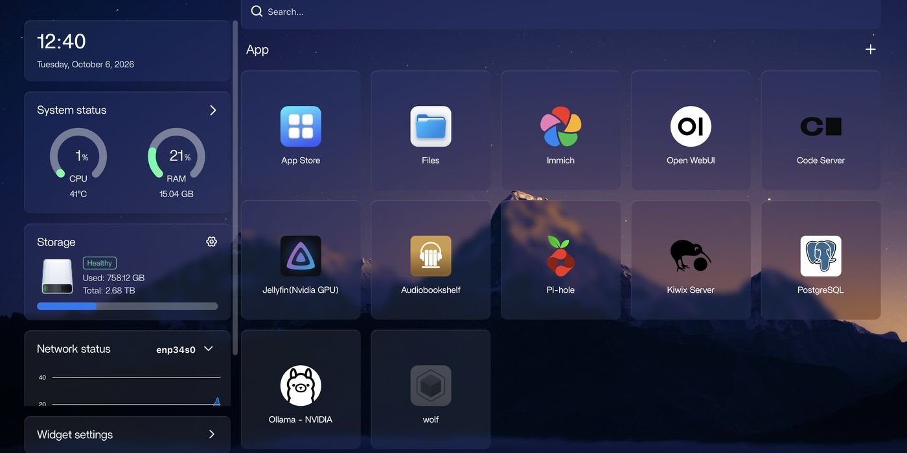
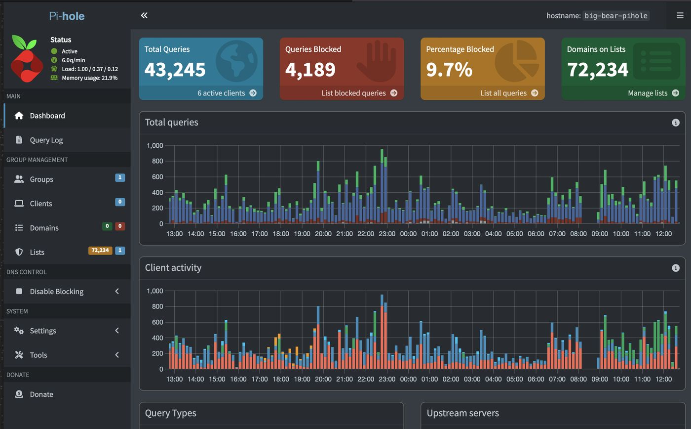
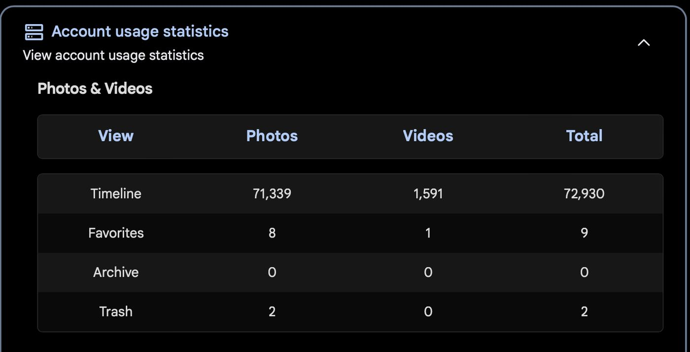
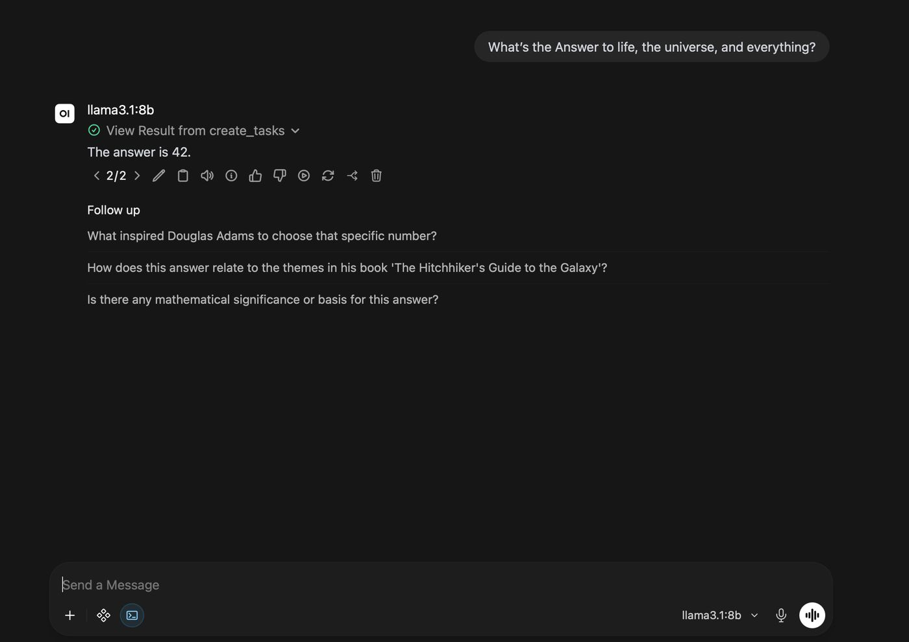

Homelab: turning a dusty PC into my own private cloud
A 24/7 Ubuntu server that every device I own can reach from anywhere, running 10 self-hosted apps. Most of what I learned came from three things that broke.
Why I built it
I built a PC for about $2,000 and then barely used it. I was always at work, at my girlfriend's place, or out doing something else, and between an iPhone, two Samsungs, a MacBook, a Mac mini, and a Lenovo IdeaPad, the desktop just collected dust. I wanted the power of that computer in the palm of my hand, wherever I was. That's when I found out homelabbing was a thing.
In April 2026 I dug through the old drives, moved everything I needed into Google Drive, formatted the machine, and installed Ubuntu Server. Linux wasn't new to me: almost every CS course I took at Waterloo had us SSH into the school's machines. Seeing PewDiePie go all-in on self-hosting is what convinced me it was worth sticking with after the first install.
What's running
The server also hosts LiftQuest, a gym-tracking web app.
How it fits together
works from anywhere
Ubuntu Server → CasaOS → Docker
WiFi as backup
Every device reaches the server through Tailscale, at home or away. The server sits next to the modem on ethernet.
The server kept shutting itself off
For a while I also had Uptime Kuma text me if the server went down. I removed it once I realized it was redundant: Tailscale is on everything I own, so I notice right away.
Moving a lifetime of photos
Getting off WiFi
Screenshots




What's next
- More storage with redundancy: a mirrored (RAID 1) array of 8 TB hard drives, with an NVMe SSD just for the OS.
- Better cooling: Noctua fans.
- More RAM so more containers can run at the same time.
- A stronger GPU and CPU for bigger local language models.